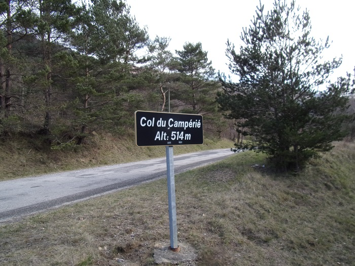
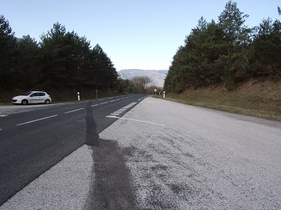
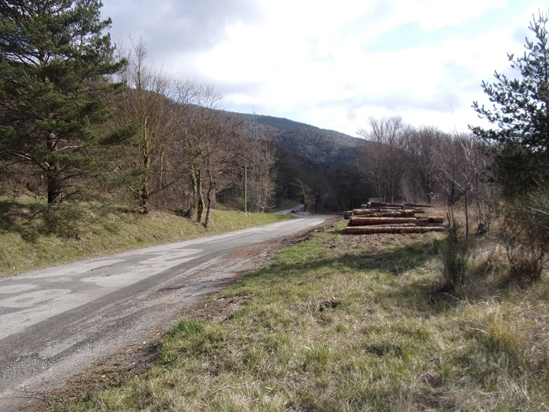
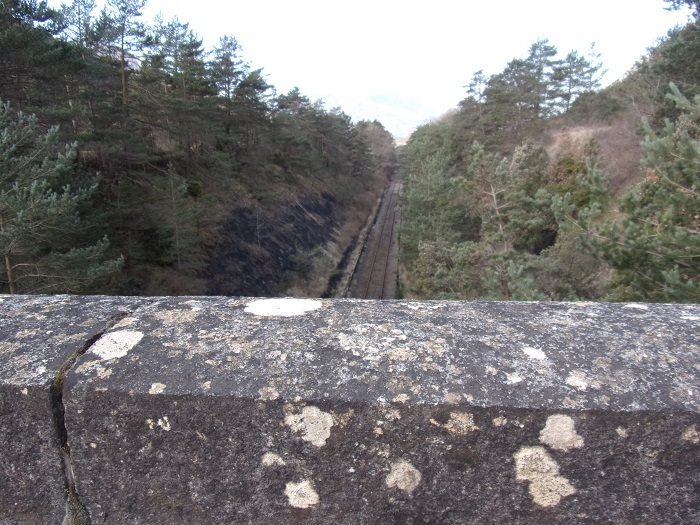
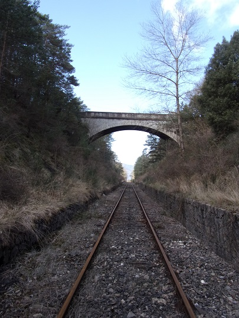
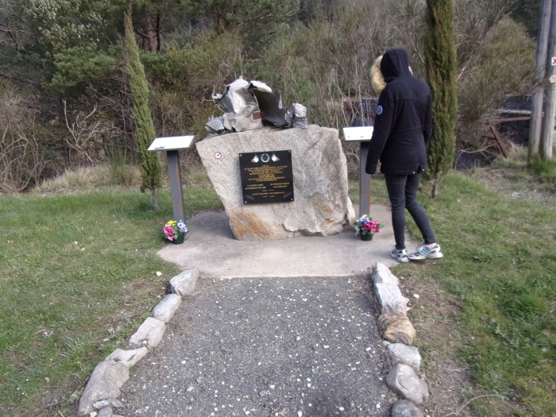
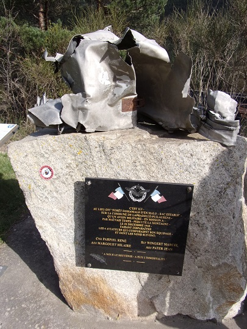

En effet, le col du campérié qui ne serait qu'à 511 mètres actuellement (après divers creusement qui lui auraient fait perdre 3 mètres), n'aurait servi de voie de communication qu'à partir du milieu du XIX° siècle
Le col du Campérié quand il était encore à 514 m...
Depuis 1876 (construction du pont d'Aliès) la route impériale (puis nationale, puis départementale) 117 emprunte le col (même si l'enquête d'utilité publique avait été validée dès 1866)
l'embranchement des routes, l'ancienne en gris clair (514 m) et la nouvelle (511 m) avec vue vers la vallée de l'Aude
La route forestière qui permet l'exploitation de la forêt des Fanges (planifiée dès 1874) part directement du col.
la route forestière de la forêt des fanges par à gauche depuis l'ancienne nationale 117
A droite de la départementale (en venant de St Martin lys), toujours au col part un chemin permettant d'exploiter les forêts communales de Puilaurens,avec un passage sur le pont des soupirs et un accès à l'être de repos début du chemin de randonnée sentier de découverte et d'interprétation de la forêt.

la route forestière des forêts de Puilaurens, départ de randonées, aire de pique-nique
Le chemin de randonnées ""sentier cathare" dans son parcours sud passe par le Campérié
Panneau descriptif du sentier de découverte positionné sur l'aire de pique-nique, repos
C'est ici que sont organisées tout les 2 ans, les journées forestières d'Axat (sauf en 2021 à cause du covid)
Le pont des soupirs permet de traverser la voie ferrée de la section Saint Paul de Fenouillet - Quillan inaugurée en 1904, (même si des projets de construction d'une ligne passant par le campérié avaient déjà été envisagés dès 1869)
Vue de la voie ferrée depuis le pont des soupirs
Le pont des soupirs vu depuis la voie
Le nom de ce pont date des locomotives à vapeur qui lachaient un soupir quand enfin elle parvenaient en haut du col pour entamer la descente.
Aujourd'hui cette partie de la voie est exploitée par les trains rouges du TPCF qui ont en particulier prévu un circuit dit des "bûcherons" en vélo-railpermettant d'arriver au col depuis Axat
Une stèle commémorative a été érigée du coté de l'aire de repos en souvenir d'un accident d'avion survenu en décembre 1940 entrainant la mort de 4 patriotes français tentant de rejoindre l'Afrique du nord
 